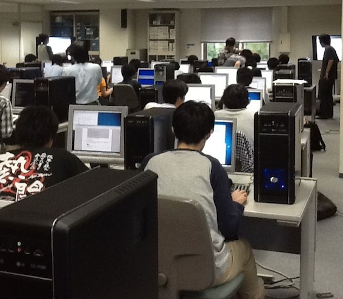
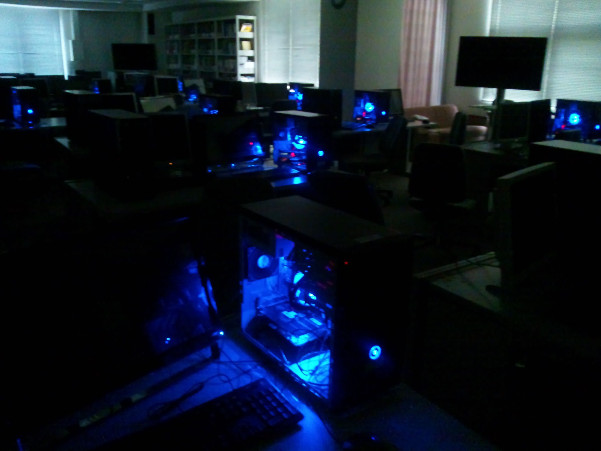
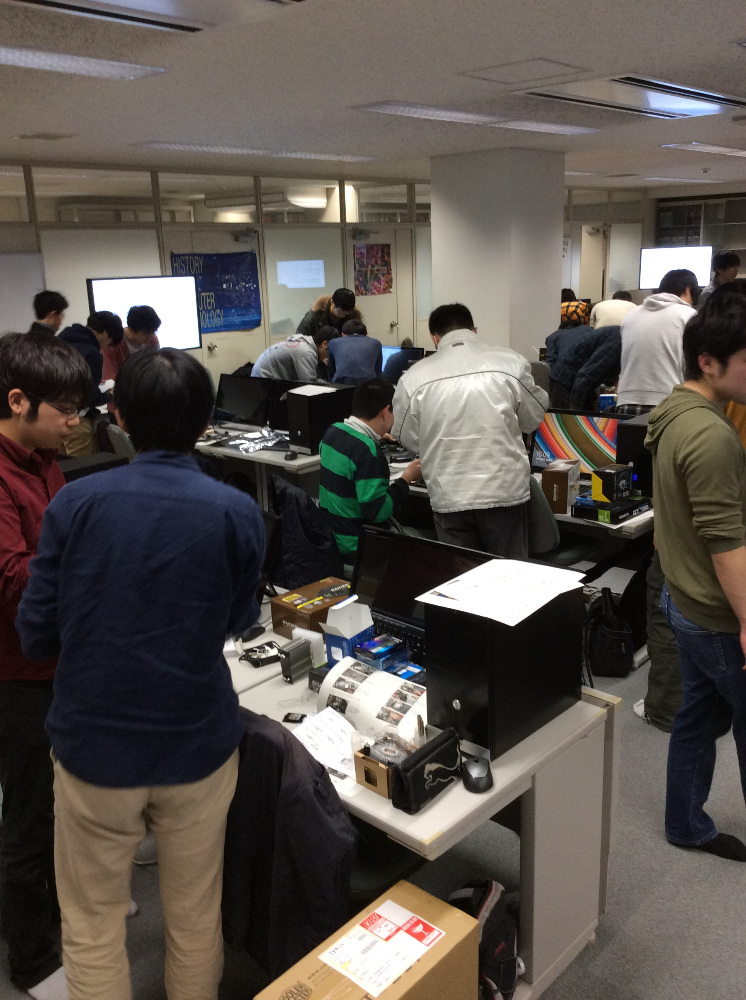

内容・順序は変更する可能性があります
| 回 | 月／日 | 予定内容 | その他 |
|---|---|---|---|
| 1 | 4/07 | PCハードウェア, Windowsインストール | グループ分け |
| 2 | 4/14 | TeX実習 (1) | |
| 3 | 4/21 | TeX実習 (2) | 中間レポート課題 |
| 4 | 4/28 | TeX実習 (3) | |
| 5 | 5/12 | 数学応用ソフトウェア (1) | 中間レポート提出締切 |
| 6 | 5/19 | 数学応用ソフトウェア (2) | |
| 7 | 5/26 | Why Linux? | 5/27 MathSciNet講習会 |
| 8 | 6/02 | Unix/Linuxの基礎 | |
| 9 | 6/09 | シェルスクリプト | |
| 10 | 6/16 | 正規表現 | |
| 11 | 6/23 | スクリプト言語プログラミング (1) | 最終レポート課題 |
| 12 | 6/30 | スクリプト言語プログラミング (2) | |
| 13 | 7/07 | ネットワーク、サーバ運用管理，セキュリティ管理 | 授業アンケート |
2012年度計算数学I Linux実習
2014年度計算数学I 実習用PCでパスワードチェック
2015年度計算数学I 組み立て
